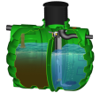

Pencemaran lingkungan tidak bisa teman-teman sepelekan, karena bisa mengancam keberlangsungan hidup
manusia, hewan, serta tumbuhan. Sedangkan, yang dimaksud pencemaran lingkungan adalah masuknya
zat asing kedalam ekosistem lingkungan tersebut hingga menyebabkan kerusakan.
Jika lingkungan di Bumi
sampai rusak, maka bisa menimbulkan sejumlah kerugian, seperti menurunnya kualitas udara, sulitnya
air bersih, kurangnya produksi bahan makanan, dan lain-lain. Untuk itu, kita harus segera mengatasinya
agar tidak semakin parah.
Jumlah manusia terus bertambah dan kebutuhannya pun terus meningkat. Kebutuhan tersebut dapat berupa kebutuhan primer maupun sekunder. Berbagai kebutuhan tersebut dapat di penuhi dengan memanfaatkan berbagai jenis sumber daya alam, baik sumber daya alam yang dapat di perbaruhi maupun yang tidak. Pengambilan yang di lakukan secara terus menerus berdampak pada semakin berkurangnya cadangan sumber daya alam.
Recycle bermanfaat untuk melestarikan sumber daya alam, mengurangi jumlah limbah, sampah, dan polusi, menghemat energi, menghemat uang, dan juga menciptakan lapangan pekerjaan baru terutama di industri daur ulang.
Kegiatan manusia yang menyebabkan pencemaran lingkungan antara lain Kegiatan transportasi, industri, penambangan, pertanian dan lain lain.. Semua kegiatan tersebut di lakukan untuk memenuhi kebutuhan manusia yang terus meningkat, baik jumlah maupun jenisnya.
Memanfaatkan sampah atau limbah atau barang yang sudah tidak dipakai untuk kepentingan yang sama dengan peruntukan semula. Contohnya botol minuman dari gelas yang telah diminum isinya, kemudian diserahkan lagi ke pengecer.
Pencemaran air terjadi dimana - mana, apalagi didaerah perkotaan yang penduduknya padat dan terdapat berbagai jenis industri. Jika pencemaran air tidak dikendalikan, maka mansua akan menangungg akibatnya, yaitu munculnya berbagai jenis penyakit Pengendalian pencemaran air mencakup upaya pencegahan, penanggulangan dari sumber - sumber pencemar, dan atau pemulihan kualitas air pada sumber - sumber ai. Tujuannya adalah agar air dapat dimanfaatkan secara terus menenerus sesuai dengan peruntukannya.
Tidak membuang sampah dan
bahan - bahan pencemar ke sungai, danau dan laut
Jika terpaksa harus membuang ke sungai, limbah di olah terlebih dahulu agar tidak membahayakan lingkungan
Melaporkan kepada pihak bewajib jika ada pihak yang mencemari lingkungan perairan
Bersama - sama anggota masyarakat lainnya melakukan upaya menjaga sungai dari pencemaran
What do they say ?
Indonesia memiliki hutan yang sangat luas. Sleain sangat luas, hutan Indonesia juga kayaakan berbagai jenis flora dan fauna. Banyak
diantara flora dan fauna yang ada didalamnya bersifat endemik atau hanya ada di indonesia.
Namun sayangnya hutan yang luas dan beraneka ragam flora dan faunanya tersebut ternyata tidak mampu dijaga
kelestariannya dengan baik. Luas hutan indonesia terus menerus berkurang.
Upaya untuk menanggulangi kerusakan hutan
dapat dilakukan dengan cara pencegahan dengan antisipasi dilakukan untuk mencegah terjadinya kerusakan.
1
Memberdayakan masyarakat sekitar hutan, baik berupa peningkatan pengetahuan tentang hutan
2
Melatih tenaga penyuluh lapangan kebakaran hutan dan lahan dan membuat peta rawan kebakaran hutan
3
Meningkatkan partisipasi masyarakat dalam mengawasi dan menjaga kelestarian hutan
4
Meningkatkan koordinasi atau hubungan antar lembaga yang berkepentingan dengan hutan